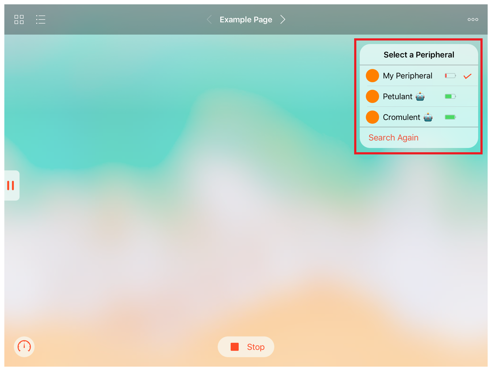

About the PlaygroundBluetooth Framework
PlaygroundBluetoothフレームワークについて
The PlaygroundBluetooth framework provides a common interface that you use to display and manage connections to Bluetooth peripherals from the framework’s central manager within a playground page.
PlaygroundBluetoothフレームワークは、ある一般インターフェイスを提供します、それはBluetooth周辺機器への接続を、フレームワークのセントラルマネージャから得て、プレイグラウンドページ内部において表示および管理するためにあなたが使います。
図 31-1 あるプレイグラウンドページの、PlaygroundBluetoothフレームワークによって提供される接続ビュー。 
This framework has two primary classes, PlaygroundBluetoothCentralManager and PlaygroundBluetoothConnectionView, along with their supporting types. The central manager scans for and connects to nearby Bluetooth peripherals. It automatically stores the ID of the most recently connected peripheral. The connection view displays status information about nearby peripherals; use it to provide a consistent interface across different playground books.
このフレームワークは２つの主要クラスPlaygroundBluetoothCentralManagerとPlaygroundBluetoothConnectionView、加えてそれらのサポートするいくつかの型を持ちます。セントラルマネージャは、近くのBluetooth周辺機器を走査して接続します。それはごく最近接続した周辺機器のIDを自動的に保管します。接続ビューは、近くの周辺機器についての状況情報を表示します；それを使って異なるプレイグラウンドブックに渡り首尾一貫したインターフェイスを提供します。
The example below shows how to configure the types in the PlaygroundBluetooth framework to connect to peripherals after you implement the delegates and data source described in this chapter.
下の例は、PlaygroundBluetoothフレームワークの中の様々な型を構成設定して、あなたがこの章で記述されるデリゲートとデータソースを実装した後で、周辺機器に接続する方法を示します。
let viewDelegate: PlaygroundBluetoothConnectionViewDelegate = <# view delegate instance #>let managerDelegate: PlaygroundBluetoothCentralManagerDelegate = <# manager delegate instance #>// Once you determine which Bluetooth services your playground page requires, （一旦あなたのプレイグラウンドページが必要とするのはどのBluetoothサービスかをあなたが決定したならば、）// pass an array of CBUUIDs for those services here instead of `nil`. （それらのサービスのためのCBUUIDからなる配列を `nil` の代わりにそこで渡してください。）let manager = PlaygroundBluetoothCentralManager(services: nil)manager.delegate = managerDelegatelet connectionView = PlaygroundBluetoothConnectionView(centralManager: manager, delegate: viewDelegate)connectionView.dataSource = viewDelegate// Place the connection view within the rest of your page's content. （接続ビューをあなたのページの内容以外のところに設置します。）let page: UIViewController & PlaygroundLiveViewSafeAreaContainer = <# playground page view controller #>page.view.addSubview(connectionView)// Position the connection view in the top right corner. （接続ビューを上部右隅に位置させます。）connectionView.topAnchor.constraint(equalTo: page.liveViewSafeAreaGuide.topAnchor, constant: 20).isActive = trueconnectionView.trailingAnchor.constraint(equalTo: page.liveViewSafeAreaGuide.trailingAnchor, constant: -20).isActive = truePlaygroundPage.current.liveView = page
For more information about interfacing with Bluetooth peripherals, see Core Bluetooth Programming Guide and Core Bluetooth framework documentation.
Bluetooth周辺機器とのインターフェイスについての更なる情報として、Core Bluetooth Programming GuideとCore Bluetoothフレームワーク文書を見てください。
To use the PlaygroundBluetooth framework in a playground, import the module using the following statement:
PlaygroundBluetoothフレームワークをプレイグラウンドの中で使用するには、そのモジュールを以下の文を使ってインポートしてください：
import PlaygroundBluetooth
To use the PlaygroundBluetooth framework while writing playground books in Xcode, download the Swift Playgrounds Author Template from Downloads for Apple Developers.
プレイグラウンドブックをXcodeで書いている間にPlaygroundBluetoothフレームワークを使うには、Swift Playgrounds Author TemplateをDownloads for Apple Developersからダウンロードしてください。
Symbols
Symbol |
Type
|
Description
|
|---|---|---|
Class |
A streamlined interface for connecting the central manager for the current playground page to nearby Bluetooth peripherals.
|
|
Enumeration |
The errors you may encounter when connecting a peripheral to the central manager.
|
|
Protocol |
A delegate you use to respond to peripheral discovery and manage the lifecycle of connections.
|
|
Class |
A view that displays the connection status of a single peripheral to the central manager for the current playground page and that lets you discover, connect to, and disconnect from another peripheral.
|
|
Structure |
An instance that holds information about a peripheral displayed in a connection view.
|
|
Enumeration |
An enumeration that you use to indicate whether a peripheral’s firmware is current.
|
|
Enumeration |
The states that tell users how to proceed when connecting to and switching between peripherals in a playground page.
|
|
Protocol |
The protocol you adopt to display an available peripheral in a playground page’s connection view.
|
|
Protocol |
A delegate you use to respond to user- and system-initiated interactions with the central manager’s connection view.
|
PlaygroundValue Enumeration
PlaygroundValue列挙
Copyright © 2018 Apple Inc. All rights reserved. Terms of Use | Privacy Policy | Updated: 2018-04-30